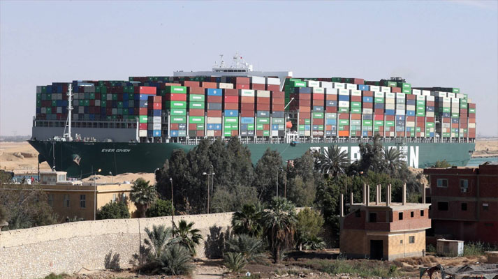
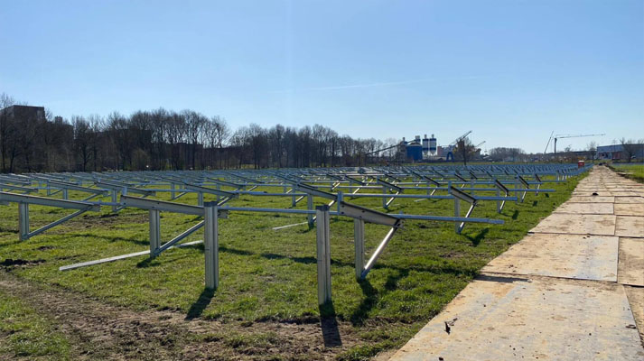

Einde van Suez-file is pas het begin van een grote logistieke puzzel
Na een kleine week vaart de Ever Given weer, maar dat betekent niet dat de problemen voorbij zijn. De schepen die de afgelopen week in de Suez-file aansloten, dreigen vanaf volgende week te dicht op elkaar op hun bestemming aan te komen. Zo komen zestig schepen die nu nog aan de zuidkant van het kanaal liggen richting de haven van Rotterdam, zegt havenwoordvoerder Leon Willems. Het gaat om 56 containerschepen, drie tankers en een schip met auto's.
Onbekend is nog hoeveel die schepen moeten lossen en hoeveel containers er vervolgens weer op moeten. Dat bepaalt hoeveel tijd er per schip nodig is, maar het staat vast dat de logistiek in de haven onder grote druk komt. "We zijn gewend om puzzels op te lossen, maar dit is wel een hele grote puzzel", zegt Rob Bagchus van containeroverslagbedrijf ECT.
Nog weken achterstand
De terminals van ECT draaiden de afgelopen tijd bijna op volle capaciteit, zegt Bagchus. "Als er dan een veel rustiger week tussen zit en die schepen komen later alsnog, dan loop je dat niet zomaar in." Hij gaat ervan uit dat het weken gaat duren voordat terminals de achterstand hebben weggewerkt. "Als je als een van de eersten aankomt, is er voldoende capaciteit. Als je bij de laatsten zit niet."
Door al die onzekerheid is het lastig in te schatten wat de uiteindelijke gevolgen zijn. In de containers op de Ever Given en al die andere schepen zitten veel verschillende producten. Denk aan kleding, elektronica bedoeld voor consumenten, of onderdelen die - als ze niet op tijd aankomen - hele fabrieken stil kunnen leggen.
"Ik denk dat het voor consumenten nog redelijk te overzien is", zegt Rogier Spoel van verladersorganisatie Evofenedex. "Het is denk ik vooral voor ondernemers lastig." Tussen een containerschip en levering in het magazijn zitten verschillende stappen, legt hij uit. "Als die operatie niet goed op elkaar is afgestemd, kan het weken extra duren." Ook is het volgens Spoel spannend welke schepen als eerst worden afgehandeld en of rederijen een haven waar het te druk is zullen overslaan.
Zeker een ton schade
Mede-eigenaar René van der Borch van een zonnepark in aanbouw in Amersfoort houdt rekening met meer vertraging. Zijn panelen liggen op de Ever Given. "Na het lostrekken van het schip is de situatie hetzelfde, omdat dat schip nog naar Rotterdam moet. We weten nog niet welke ellende ons daar te wachten staat. Het is daar zó druk. Daar zal ook file komen."
Het zonnepark waar nu nog de panelen op moeten komen die liggen op de Ever Given
Van der Borch schat in dat hij niet in juli, maar pas in augustus groene stroom kan leveren. Een vertraging die tussen de 100.000 en 150.000 euro kost. "Dat is niet verzekerbaar en komt ook niet zomaar terug. Heel vervelend."
Ook computerapparatuur
Tussen de scheepsladingen die nu in of rond het Suezkanaal liggen te wachten, zit ook computerapparatuur, weet directeur Rogier Borggreve van ict-dienstverlener Heutink ICT. "Wij horen nu van fabrikanten dat zij goederen op de boten hebben staan. Die leveringen komen later, waardoor planningen niet gehaald worden."
De sector heeft al te maken met leveringsproblemen door een wereldwijd chiptekort en dit maakt de situatie niet beter. "Afhankelijk van hoelang dit nog gaat duren, gaat het zeker extra pijn veroorzaken. Want hierdoor zijn leveringen nog onzekerder", zegt Borggreve.
Een aantal ondernemers wachten nog op spullen:
Het containerschip is losgetrokken, maar de problemen zijn nog niet voorbij
Om opstoppingen en extra vertragingen te voorkomen wil ECT zoveel mogelijk met andere partijen afstemmen. "Zo benut je de capaciteit zo goed mogelijk", zegt Bagchus. Vanuit rederijen zou je bijvoorbeeld kunnen denken aan het ene schip wat sneller en het ander wat langzamer laten varen, suggereert hij. Het achterland moet containers ook zo snel mogelijk in de haven ophalen.
"Ik hoop dat het mee gaat vallen, maar het gaat toch om grote schepen met gemiddeld veel lading", zegt havenwoordvoerder Willems. Hij vergelijkt de situatie voor containerschepen bij Suez met een auto-ongeluk op de Franse snelweg. "Je komt in de file en op een gegeven moment ga je weer rijden. Maar dan kom je bij de tolpoortjes en sta je weer vast."
"De haventerminals kunnen er geen kilometer kade of extra kranen bij plaatsen", vervolgt hij. "Iedereen zal door de bestaande capaciteit geholpen moeten worden."